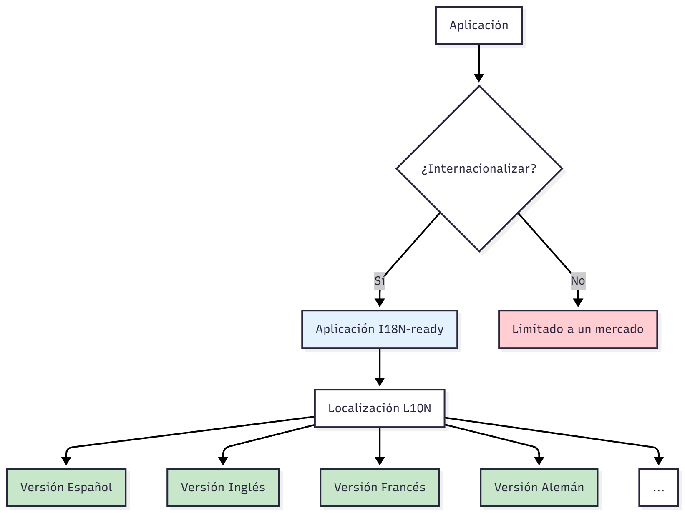
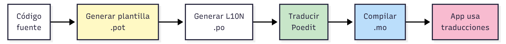

void mostrar_error(const std::string& archivo) {
std::cout << "Error: No se pudo abrir el archivo "
<< archivo << std::endl;
std::cout << "Verifica que el archivo existe y tienes permisos."
<< std::endl;
}
void mostrar_estadisticas(int total, int procesados) {
std::cout << "Procesados " << procesados
<< " de " << total << " archivos." << std::endl;
double porcentaje = (procesados * 100.0) / total;
std::cout << "Progreso: " << porcentaje << "%" << std::endl;
}¿Se puede distribuir esta aplicación en internet?
El programa no se puede distribuir porque:
La internacionalización no es un lujo, es una necesidad competitiva para garantizar el éxito de un producto que se distribuye en internet.
Queda claro que necesitamos internacionalizar nuestras aplicaciones. Sin embargo…
¿Ese trabajo nos corresponde a nosotros?
A no ser que tengamos dos grados (informática y traducción e interpretación), la internacionalización es una tarea que implica a especialistas de la traducción y la localización de textos.
¿Qué sucede con esto?
No debemos asumir nunca que los equipos interdisciplinares externos saben de informática y programación. Por lo tanto, debemos trabajar bajo sistemas centralizados donde todos colaboren de forma cómoda y accesible
Por lo tanto, en esta lección no solo aprenderemos a cómo implementar un sistema de internacionalización, sino a cómo diseñar y trabajar con herramientas que permitan la intervención de equipos externos no especialistas.
I18N = I + 18 letras + N
Proceso de diseño y desarrollo de software de manera que pueda adaptarse fácilmente a diferentes idiomas y regiones sin requerir cambios en el código fuente.
Sus principios fundamentales son:
Nota
Los desarrolladores se responsabilizan del I18N durante todo el desarrollo de la aplicación.
L10N = L + 10 letras + N
Proceso de adaptar una aplicación internacionalizada a un idioma y cultura específicos, incluyendo traducciones, formatos, convenciones culturales y requisitos legales.
Los componentes principales de la localización
Localizar no implica traducción literal, sino reconocer esos referentes y adaptarlos adecuadamente a la cultura y el idioma propios del receptor.
Si en un juego hay expresiones de Reddit y 4chan, pues se adaptan culturalmente a, por ejemplo, expresiones de Forocoches o MeriStation. Hay que saber dónde están los límites y jugar con el idioma para realizar un buen trabajo, con textos naturales y cercanos, pero sin pasarse al extremo de que aparezca Carmen Sevilla en una serie de ambientación estadounidense.
Básicamente, no existen juegos que no deban o no puedan ser localizados. Y si el problema es con la imagen, ahí entra la colaboración con los desarrolladores para modificar las texturas o lo que sea y conseguir que funcione (algo que se hace mucho del japonés al inglés y viceversa, por ejemplo)
Ramón Méndez (2018)
Paper Mario: La puerta milenaria (2004)
Paper Mario: La puerta milenaria (2004)
Nota
Los traductores e intérpretes se responsabilizan del L10N durante todo el desarrollo de la aplicación.
Advertencia
Los desarrolladores pueden participar en el L10N, pero un rol meramente técnico, como asistente de integración.

Nota
I18N es un prerequisito para L10N. No puedes localizar una aplicación efectivamente sin tener su versión internacionalizada primero.
¿Cómo configuramos y diseñamos una aplicación para lograr esta simbiosis?
Un locale es un conjunto de parámetros y convenciones que definen:
Un locale encapsula el contexto del idioma necesario para que el software interprete y presente información de manera apropiada para el usuario.
Se sigue un formto estándar:
idioma[_TERRITORIO][.codificación][@modificador]
es_ES.UTF-8@andalucía
│ │ │ │
│ │ │ └─ Modificador (opcional): Variante dialectal
│ │ └──────── Codificación: Cómo se representan los caracteres
│ └─────────── Territorio: País/región específica
└────────────── Idioma: Código ISO 639Algunos ejemplos…
es_ES.UTF-8 # Español de España, UTF-8
es_MX.UTF-8 # Español de México, UTF-8
en_US.UTF-8 # Inglés americano, UTF-8
en_GB.UTF-8 # Inglés británico, UTF-8
pt_BR.UTF-8 # Portugués brasileño
pt_PT.UTF-8 # Portugués de Portugal
zh_CN.UTF-8 # Chino simplificado (China continental)
zh_TW.UTF-8 # Chino tradicional (Taiwan)
de_DE.UTF-8 # Alemán de Alemania
de_CH.UTF-8 # Alemán de SuizaTodos los códigos de idioma principales siguen el estándar ISO 639-1, el cual establece dos letras para definir un idioma.
Ejemplos de idiomas: zh: Chino, en: Inglés, es: Español, hi: Hindi, fr: Francés, pt: Portugués
Actualmente, el ISO 639-1 soporta 184 idiomas principales.
Nota
También existe ISO 639-2 (tres letras) para idiomas menos comunes: cat (catalán), glg (gallego), eus (euskera). Actualmente, soporta 460 lenguas no principales.
Se utiliza el estándar ISO 3166-1 alpha-2, el cual establece el código de un país por dos letras.
Nota
El propósito es ser capaces de distinguir variantes regionales del mismo idioma
Español
es_ES - España (vosotros, ordenador)es_MX - México (ustedes, computadora)es_AR - Argentina (vos, computadora)es_PE - Perú (ustedes, CPU)Inglés
en_US - EE.UU. (color, elevator)en_GB - Reino Unido (colour, lift)en_AU - Australia (slang único)en_CA - Canadá (mezcla US/UK)Advertencia
Error común: Asumir que el código de idioma es suficiente. ¡Las diferencias lingüísticas entre países y regiones son significativas!
Es la codificación por la que las cadenas de texto se almacenan en bytes. Cada codificación determina sus propias reglas.
Codificaciones conocidas:
UTF-8 se posiciona como el estándar moderno para codificar cadenas de caracteres
Carácter UTF-8 (hex) Bytes
'A' 41 1 byte
'ñ' C3 B1 2 bytes
'€' E2 82 AC 3 bytes
'🚀' F0 9F 9A 80 4 bytes
'你' E4 BD A0 3 bytesTip
Intenta usar, siempre que puedas, UTF-8 en tus proyectos. Es compatible con ASCII y soporta todos los idiomas del mundo.
Ejemplo:
Texto original: "Niño comió paella con el señor López"
Codificación correcta (UTF-8):
Niño comió paella con el señor López
Interpretado como ISO-8859-1:
Niño comió paella con el señor López
Interpretado como Windows-1252:
Niño comió paella con el señor López
Interpretado como ASCII (sin soporte):
Ni?o comi? paella con el se?or L?pezUna cuestión que queda por resolver es dónde aplicar la internacionalización con el sistema locale.
El sistema locale POSIX divide las convenciones culturales en 6 categorías independientes:
LC_COLLATE: Ordenación ortográfica de cadenas
¿ñ va después de n?
El sistema locale POSIX divide las convenciones culturales en 6 categorías independientes:
LC_CTYPE: Clasificación de caracteres
¿Es ñ una letra? ¿Es mayúscula o minúscula?
El sistema locale POSIX divide las convenciones culturales en 6 categorías independientes:
LC_MESSAGES: Mensajes y salidas del sistema
“Error” vs “Erreur” vs “Fehler”
El sistema locale POSIX divide las convenciones culturales en 6 categorías independientes:
LC_MONETARY: Formato monetario
“1.234,56 €” vs “$1,234.56”
El sistema locale POSIX divide las convenciones culturales en 6 categorías independientes:
LC_NUMERIC: Formato numérico
“3,14” vs “3.14”
El sistema locale POSIX divide las convenciones culturales en 6 categorías independientes:
LC_TIME: Formato de fecha/hora
“07/12/2024” vs “12/07/2024”
Tip
Si quieres internacionalizar toda la aplicación, mejor usa LC_ALL, que es una meta-categoría que establece todas a la vez.
GNU gettext es el sistema estándar de internacionalización para software de código abierto y muchos proyectos comerciales. Desarrollado por el proyecto GNU en 1995.

En primer lugar, debemos generar una plantilla que los traductores replicarán para localizar la aplicación.
¿Cómo sabemos qué se debe traducir?
A través de la función gettext.
Nota
Gettext utiliza un sistema clave-valor para hacer las traducciones. El string original del código fuente define una clave, la cual se usará para sustituir por traducciones (o usarla por defecto en el idioma original).
¿Cómo identificamos nuestro texto?
A través del string original en el código fuente. Ese término se convierte en una clave.
Debemos definir también el dominio de nuestras traducciones (entendámolos como un namespace).
#include <libintl.h>
#include <locale.h>
textdomain("myapp");
gettext("Save file"); // "Save file" es el idAdvertencia
¡Mucho cuidado! Las traducciones, por defecto, se buscarán en la carpeta /usr/share/locale/lg_RG/CODE/myapp.po. Si quieres evitar este comportamiento, deberás reconfigurar el path de búsqueda con la función bindtextdomain.
Para generar la plantilla, ejecutaremos el comando xgettext
Tip
Si quieres evitar usar gettext en todo tu código, puedes definir una macro de preprocesador con un prefijo. Por ejemplo, _. Si haces eso, deberás añadir el argumento –keyworkd a xgettext
Antes de seguir, debemos conocer los ficheros que genera gettext:
Es decir:
Portable Object Template .pot
Es la plantilla que contiene todos los strings originales extraídos del código sin ninguna traducción. Es el punto de partida para crear archivos PO de cada idioma.
xgettext.msgid pero msgstr vacíos..po.Para generar una localización de nuestro programa, deberemos crear un fichero .po a partir del .pot generado.
¿Qué hace msginit?
Tal y como observamos, el fichero .po generado es, de raíz, igual que el fichero de plantilla.
Sin embargo, este fichero es el que los intérpretes usarán para traducir la aplicación. Para ello, deberán rellenar todos los campos msgstr con el mensaje que deberá aparecer en esa versión.
Es decir, en el fichero .po debemos esperar:
Nota
Seguramente te estés preguntando: ¡Pero qué demonios va a hacer un intérprete con este fichero y este sistema! ¡No te preocupes! Existen herramientas con GUI para editar estos ficheros, como PoEdit o Lokalize para que no sufran.
Datos importantes de los ficheros po
Las entradas de un fichero .po tienen estados.
Datos importantes de los ficheros po
Las entradas de un fichero .po tienen estados.
Si una entrada está completa, se dice que está localizada
Datos importantes de los ficheros po
Las entradas de un fichero .po tienen estados.
Si una entrada está in, se dice que está sin localizar
En este caso, se pondrá el texto original por defecto.
Datos importantes de los ficheros po
Las entradas de un fichero .po tienen estados.
Si lleva un comentario #, fuzzy, significa que es una localización dudosa
gettext no usará el msgid hasta que no se elimine el flag.
¿Cuándo se pone el flag de fuzzy?
msmerge detecta que el msgid cambió de una versión a otra del .pot.Sobre msmerge…
Sobre msmerge…
msgstr vacío).msgid modificados.El último paso para localizar nuestra aplicación es compilar los ficheros .po en ficheros .mo.
Machine Object
Archivo binario generado desde .po, optimizado para:
Advertencia
¡Recuerda! Si no has cambiado con bindtextdomain la ubicación de búsqueda tus ficheros .mo, entonces gettext los buscará en la ruta de usr/share/locale.
Para compilar, usaremos el comando de msgfmt
Presto! Ya tendremos nuestra aplicación localizada a varios idiomas.
Tip
Para probar en local, puedes cambiar la variable de entorno LANG al ejecutar el programa. Esto a veces no funciona, por lo que puedes también utilizar una de mayor nivel como LANGUAGE.
Cada idioma tiene reglas diferentes para plurales:
Inglés (2 formas)
1 file
2 files
5 filesFrancés (2 formas)
0 fichier
1 fichier
2 fichiersPolaco (3 formas)
1 plik
2 pliki
5 plików
22 plikiEsloveno (4 formas)
1 datoteka
2 datoteki
3 datoteke
5 datotekAdvertencia
No puedes asumir que añadir el caracter “s” funciona globalmente
Gettext gestiona automáticamente estas diferencias usando fórmulas matemáticas.
Dentro de la cabecera del fichero .po
En el código, utilizaremos la función ngettext:
¿Qué hace ngettext?
count.En el fichero .po se generan todas las opciones de plurales que hay en el idioma.
Tip
GNU gettext especifica que, por defecto, contiene las fórmulas de plurales de 140 idiomas, por lo que las obtendrá automáticamente si especificamos bien el locale al que vamos a generar el fichero .po.
Desarrollo Colaborativo de Aplicaciones